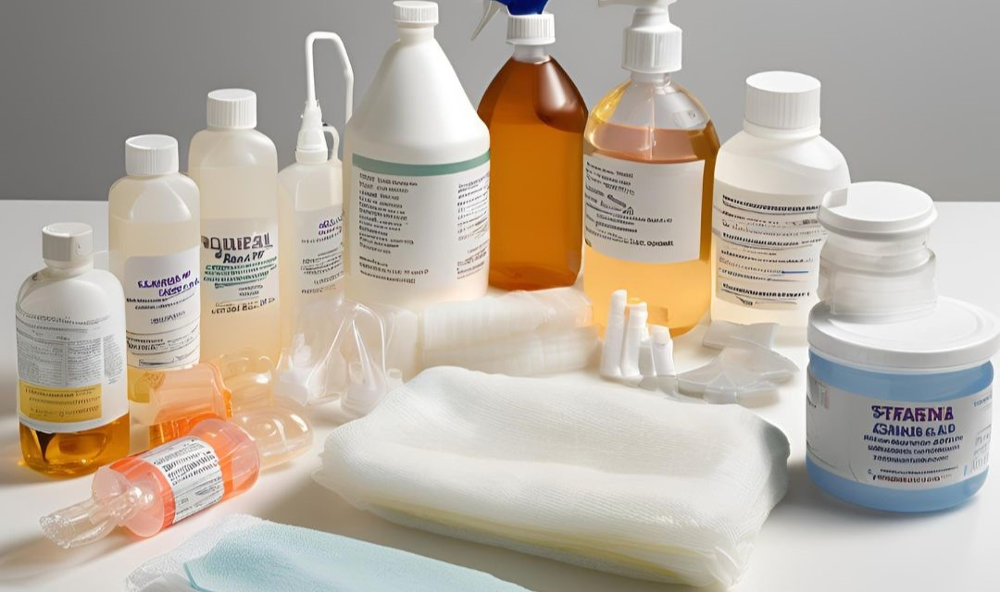
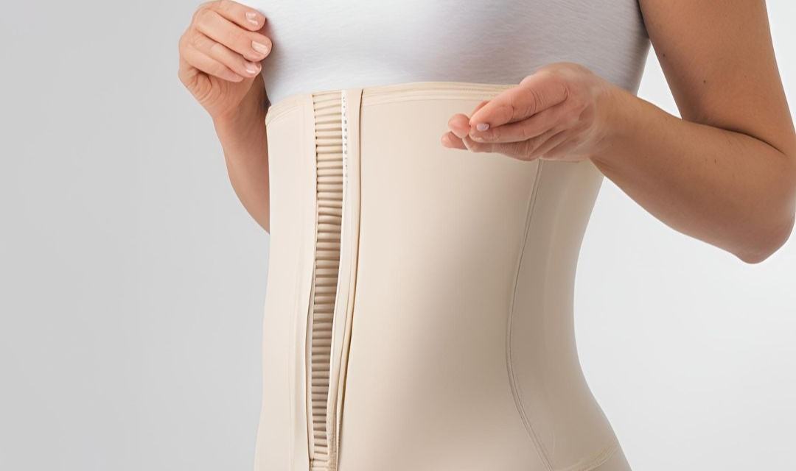
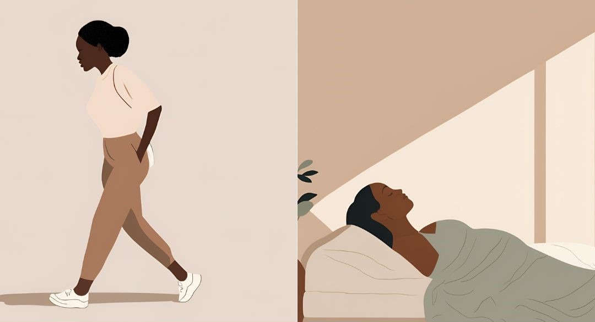

A abdominoplastia é uma cirurgia que exige cuidados específicos para que você obtenha os melhores resultados com segurança e conforto. Aqui, vamos detalhar tudo o que é importante para o seu pós-operatório, garantindo um processo de recuperação mais tranquilo e bem-sucedido. Lembre-se: o sucesso da sua cirurgia depende do cumprimento das orientações do seu cirurgião e da equipe médica.
1. Cuidados Imediatos e Gerais
Após a abdominoplastia, o corpo precisa de um período de recuperação para se ajustar e cicatrizar. Siga as orientações abaixo para proteger a área operada e reduzir o risco de complicações:
- Evite esforços físicos: Nos primeiros 15 dias, evite qualquer tipo de esforço ou movimento brusco. Isso inclui carregar peso, subir escadas em excesso ou fazer exercícios físicos.
- Repouse adequadamente: O repouso é essencial nos primeiros dias. Prefira descansar em uma posição levemente inclinada, com o tronco elevado e os joelhos flexionados para aliviar a tensão na área abdominal.
- Movimente-se com cuidado: Movimente-se devagar e, sempre que possível, com o auxílio de outra pessoa, principalmente nas primeiras 48 horas. Pequenas caminhadas ajudam a ativar a circulação e prevenir trombose.
- Atenção aos sinais de alerta: Caso observe sangramentos, febre, dor intensa e persistente, vermelhidão ou inchaço anormal, entre em contato com sua equipe médica imediatamente.
2. Cuidados com a Alimentação
Uma dieta balanceada é essencial para a sua recuperação, pois fornece nutrientes que auxiliam no processo de cicatrização e fortalecem o organismo.
- Alimentos recomendados
- Proteínas magras:Inclua carnes brancas, peixes, ovos e leguminosas, pois são essenciais para a cicatrização.
- Frutas e vegetais: Ricos em vitaminas e minerais, eles ajudam a reduzir o inchaço e melhoram a resposta imunológica.
- Alimentos ricos em fibras: Alimentos integrais, frutas e legumes ajudam a prevenir constipação, um problema comum no pós-operatório devido à redução de movimentos.
 Evite
Evite
- Alimentos processados e ricos em sódio: Eles podem causar inchaço e dificultar a recuperação..
- Açúcar e frituras: Esses alimentos inflamam o organismo e podem comprometer a cicatrização.
- Álcool e cafeína: Evite o consumo, pois interferem na absorção de nutrientes e na cicatrização.
3. Higiene e Cuidados com a Ferida Operatória
Manter a área operada limpa e protegida é fundamental para evitar infecções e garantir uma cicatrização adequada.

- Banhos: Somente banhos rápidos, e com autorização médica, geralmente após o segundo dia. Evite molhar a área da incisão nas primeiras semanas.
- Curativos: Siga as orientações médicas para troca dos curativos, e nunca mexa na área operada sem higienizar bem as mãos antes.
- Uso de Antissépticos: Em geral, a limpeza da ferida deve ser feita com solução antisséptica recomendada pela equipe médica. Não utilize produtos caseiros, como álcool, sem recomendação.
- Secagem: Após a higiene, seque cuidadosamente com uma toalha limpa, sem friccionar.
4. Fisioterapia Pós-operatória

A fisioterapia no pós-operatório da abdominoplastia é essencial para obter melhores resultados estéticos e acelerar a recuperação. Alguns tratamentos específicos auxiliam na prevenção de fibroses, retrações cutâneas e promovem a qualidade da cicatrização.
- Drenagem Linfática Manual: A drenagem linfática é uma técnica suave que ajuda a reduzir o inchaço e eliminar líquidos retidos, o que melhora o conforto e acelera a recuperação. Realizada por fisioterapeutas especializados, a drenagem previne a formação de fibroses e otimiza a circulação linfática.
 - Carboxiterapia: Esse tratamento utiliza pequenas injeções de gás carbônico no tecido subcutâneo, o que melhora a oxigenação local e contribui para uma cicatrização mais uniforme e saudável. A carboxiterapia também ajuda a reduzir a formação de fibroses, mantendo a pele mais lisa e flexível.
- Carboxiterapia: Esse tratamento utiliza pequenas injeções de gás carbônico no tecido subcutâneo, o que melhora a oxigenação local e contribui para uma cicatrização mais uniforme e saudável. A carboxiterapia também ajuda a reduzir a formação de fibroses, mantendo a pele mais lisa e flexível.
 - Terapias com Laser: O uso de lasers específicos no pós-operatório ajuda a estimular a regeneração celular, melhorando a qualidade da cicatriz e diminuindo a inflamação. Lasers terapêuticos também auxiliam na prevenção de retrações cutâneas e na formação de cicatrizes hipertróficas.
- Terapias com Laser: O uso de lasers específicos no pós-operatório ajuda a estimular a regeneração celular, melhorando a qualidade da cicatriz e diminuindo a inflamação. Lasers terapêuticos também auxiliam na prevenção de retrações cutâneas e na formação de cicatrizes hipertróficas.
Esses tratamentos devem ser realizados por profissionais especializados, em frequência e duração recomendadas pelo seu cirurgião e fisioterapeuta.
5. Uso da Cinta e das Meias de Compressão

O uso adequado da cinta e das meias de compressão é essencial para a recuperação, pois ajuda na contenção do edema, no suporte à pele e na prevenção de trombose.
 - Cinta Abdominal:
- Cinta Abdominal:
-Duração:Utilize a cinta 24 horas por dia durante o primeiro mês, removendo apenas para a higiene. O tempo de uso poderá variar de acordo com a orientação médica, mas em média, ela deve ser usada por cerca de dois a três meses
- Ajuste: Certifique-se de que a cinta está ajustada ao corpo, mas não apertada demais. Ajustes muito intensos podem prejudicar a circulação e causar desconforto.
- Meias de Compressão:
- Duração: As meias de compressão são fundamentais para prevenir tromboses. Use-as diariamente pelo período orientado pelo seu cirurgião (em geral, de 14 a 28 dias).
- Retirada: As meias podem ser retiradas para dormir (após a primeira semana), conforme a orientação médica.
6. Posições Corporais

As posições adotadas no pós-operatório são muito importantes para proteger a ferida e ajudar na sua recuperação.
- Deitar-se com tronco elevado e pernas flexionadas: Adote essa posição para descansar, pois ela reduz a pressão no abdômen e contribui para a cicatrização.
- Evitar posturas eretas nos primeiros dias:: Caminhe levemente curvado para frente até que o médico autorize a retomar a postura reta. Isso reduz a tensão na área da cicatriz
7. Recomendações Finais para um Pós-operatório Tranquilo
- Controle do Inchaço: Utilize compressas frias na região abdominal conforme a orientação médica para ajudar a reduzir o inchaço.
- Evite Tabagismo: Não fume, pois o cigarro compromete a oxigenação dos tecidos e dificulta a cicatrização.
- Atente-se aos retornos médicos: Compareça a todas as consultas de revisão para garantir que sua recuperação está no caminho certo.
A recuperação completa é um processo gradual, que depende tanto do trabalho da equipe médica quanto dos cuidados diários que você realiza. Com disciplina e atenção às recomendações, você estará no caminho para uma recuperação mais rápida e segura, alcançando os melhores resultados possíveis na sua abdominoplastia.